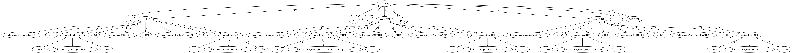

Comma-Separated Values (CSV) parser tutorial
A tutorial for building parser for well known CSV format.
In this tutorial we will see how to make a parser for a simple data interchange format - CSV (Comma-Separated Values). CSV is a textual format for tabular data interchange. It is described by RFC 4180.
Here is an example of CSV file:
Year,Make,Model,Length
1997,Ford,E350,2.34
2000,Mercury,Cougar,2.38
Although, there is csv module in the standard Python library this example has been made as the CSV is ubiquitous and easy to understand so it it a good starter for learning Arpeggio.
The grammar
Let's start first by creating a python module called csv.py.
Now, let's define CSV grammar.
-
CSV file consists of one or more records separated by a newline.
def csvfile(): return OneOrMore([record, '\n']), EOF -
Each record consists of fields separated with commas.
def record(): return field, ZeroOrMore(",", field) -
Each field may be quoted or not.
def field(): return [quoted_field, field_content] -
Field content is everything until newline or comma.
def field_content(): return _(r'([^,\n])+')We use regular expression to match everything that is not comma or newline.
-
Quoted field starts and ends with double quotes.
def quoted_field(): return '"', field_content_quoted, '"' -
Quoted field content is defined as
def field_content_quoted(): return _(r'(("")|([^"]))+')Quoted field content is defined with regular expression that will match everything until the closing double-quote. Double quote inside data must be escaped by doubling it (
"").
The whole content of the csv.py file until now should be:
from arpeggio import *
from arpeggio import RegExMatch as _
# This is the CSV grammar
def record(): return field, ZeroOrMore(",", field)
def field(): return [quoted_field, field_content]
def quoted_field(): return '"', field_content_quoted, '"'
def field_content(): return _(r'([^,\n])+')
def field_content_quoted(): return _(r'(("")|([^"]))+')
def csvfile(): return OneOrMore([record, '\n']), EOF
The parser
Let's instantiate parser. In order to catch newlines in csvfile rule we must
tell Arpeggio not to treat newlines as whitespace, i.e. not to skip over them.
Thus, we will be able to handle them explicitly as we do in csvfile rule. To do
so we will use ws parameter in parser construction to redefine what is
considered as whitespace. You can find more information
here.
After the grammar in csv.py instantiate the parser:
parser = ParserPython(csvfile, ws='\t ')
So, whitespace will be a tab char or a space. Newline will be treated as regular
character. We give grammar root rule to the ParserPython. In this example it
is csvfile function.
parser now refers to the parser object capable of parsing CSV inputs.
Parsing
Let's parse some CSV example string.
Create file test_data.csv with the following content:
Unquoted test, "Quoted test", 23234, One Two Three, "343456.45"
Unquoted test 2, "Quoted test with ""inner"" quotes", 23234, One Two Three, "343456.45"
Unquoted test 3, "Quoted test 3", 23234, One Two Three, "343456.45"
In csv.py file write:
test_data = open('test_data.csv', 'r').read()
parse_tree = parser.parse(test_data)
test_data is Python string containing test CSV data from the file. Calling
parser.parse on the data will produce the parse tree.
If you run csv.py module, and there are no syntax errors in the test_data.csv
file, parse_tree will be a reference to parse tree of
the test CSV data.
$ python csv.py
Congratulations!! You have successfuly parsed CSV file.
This parse tree is visualized below
(Tip: The image is large. Right click on it and choose View image to see it in
a separate tab and to be able to use zooming):

Note
To visualize grammar (aka parser model) and parse tree instantiate the parser in debug mode.
parser = ParserPython(csvfile, ws='\t ', debug=True)
Transform generated dot files to images.
See more here
Defining grammar using PEG notation
Now, let's try the same but using textual PEG notation for the grammar definition.
We shall repeat the process above but we shall encode rules in PEG.
We shall use clean PEG variant (arpeggio.cleanpeg module).
First, create textual file csv.peg to store the grammar.
-
CSV file consists of one or more records separated by a newline.
csvfile = (record / '\n')+ EOF -
Each record consists of fields separated with commas.
record = field ("," field)* -
Each field may be quoted or not.
field = quoted_field / field_content -
Field content is everything until newline or comma.
field_content = r'([^,\n])+'We use regular expression to match everything that is not comma or newline.
-
Quoted field starts and ends with double quotes.
quoted_field = '"' field_content_quoted '"' -
Quoted field content is defined as
field_content_quoted = r'(("")|([^"]))+'Quoted field content is defined with regular expression that will match everything until the closing double-quote. Double quote inside data must be escaped by doubling it (
"").
The whole grammar (i.e. the contents of csv.peg file) is:
csvfile = (record / r'\n')+ EOF
record = field ("," field)*
field = quoted_field / field_content
field_content = r'([^,\n])+'
quoted_field = '"' field_content_quoted '"'
field_content_quoted = r'(("")|([^"]))+'
Now, we shall create csv_peg.py file in order to instantiate our parser and
parse inputs. This time we shall instantiate different parser class
(ParserPEG). The whole content of csv_peg.py should be:
from arpeggio.cleanpeg import ParserPEG
csv_grammar = open('csv.peg', 'r').read()
parser = ParserPEG(csv_grammar, 'csvfile', ws='\t ')
Here we load the grammar from csv.peg file and construct the parser using
ParserPEG class.
The rest of the code is the same as in csv.py. We load test_data.csv and
call parser.parse on it to produce parse tree.
To verify that everything works without errors execute csv_peg.py module.
$ python csv_peg.py
If we put the parser in debug mode and generate parse tree image we can verify that we are getting the same parse tree regardless of the grammar specification approach we use.
To put parser in debug mode add debug=True to the parser parameters list.
parser = ParserPEG(csv_grammar, 'csvfile', ws='\t ', debug=True)
Extract data
Our main goal is to extract data from the csv file.
The parse tree we get as a result of parsing is not very useful on its own. We need to transform it to some other data structure that we can use.
First lets define our target data structure we want to get.
Since csv consists of list of records where each record consists of fields
we shall construct python list of lists:
[
[field1, field2, field3, ...], # First row
[field1, field2, field3,...], # Second row
[...], # ...
...
]
To construct this list of list we may process parse tree by navigating its nodes and building the required target data structure. But, it is easier to use Arpeggio's support for semantic analysis - Visitor Pattern.
Let's make a Visitor for CSV that will build our list of lists.
class CSVVisitor(PTNodeVisitor):
def visit_record(self, node, children):
# record is a list of fields. The children nodes are fields so just
# transform it to python list.
return list(children)
def visit_csvfile(self, node, children):
# We are not interested in empty lines so we will filter them.
return [x for x in children if x!='\n']
and apply this visitor to the parse tree:
csv_content = visit_parse_tree(parse_tree, CSVVisitor())
Now if we pretty-print csv_content we can see that it is exactly what we wanted:
[ [ u'Unquoted test',
u'Quoted test',
u'23234',
u'One Two Three',
u'343456.45'],
[ u'Unquoted test 2',
u'Quoted test with ""inner"" quotes',
u'23234',
u'One Two Three',
u'34312.7'],
[ u'Unquoted test 3',
u'Quoted test 3',
u'23234',
u'One Two Three',
u'343486.12']]
But, there is more we can do. If we look at our data we can see that some fields
are of numeric type but they end up as strings in our target structure. Let's
convert them to Python floats or ints. To do this conversion we will introduce
visit_field method in our CSVVisitor class.
class CSVVisitor(PTNodeVisitor):
...
def visit_field(self, node, children):
value = children[0]
try:
return float(value)
except:
pass
try:
return int(value)
except:
return value
...
If we pretty-print csv_content now we can see that numeric values are not strings
anymore but a proper Python types.
[ [u'Unquoted test', u'Quoted test', 23234.0, u'One Two Three', 343456.45],
[ u'Unquoted test 2',
u'Quoted test with ""inner"" quotes',
23234.0,
u'One Two Three',
34312.7],
[ u'Unquoted test 3',
u'Quoted test 3',
23234.0,
u'One Two Three',
343486.12]]
This example code can be found here.